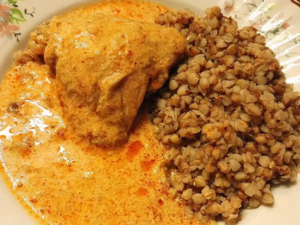

Фото: Teemeah, CC BY-SA 3.0

Курица с гречкой на сковороде
Гречка с курицей и овощами в одной сковороде, гарнир и мясо сразу
45 мин4 порц.466 ккал на порциюБ 40 · Ж 12 · У 52Русская кухня
Продукты на 4 порц.
- Куриное филе500 г
- Гречка1,5 стак.
- Вода3 стак.
- Лук репчатый1 шт
- Морковь1 шт
- Чеснок2 зуб.
- Растительное масло2 ст. л.
- Соль2 ч. л.
- Перец чёрный молотый2 щеп.
- Лавровый лист1 шт
Как готовить
- Гречку переберите и промойте. Курицу нарежьте кубиками 2 см, лук - кубиком, морковь натрите.
- В глубокой сковороде обжарьте курицу на масле на сильном огне 5 минут до светлой корочки.
- Добавьте лук и морковь, жарьте на среднем огне ещё 5 минут.
- Всыпьте гречку и обжарьте вместе 1-2 минуты, помешивая.
- Влейте горячую воду, добавьте соль, перец, лавровый лист и раздавленный чеснок. Доведите до кипения.
- Накройте крышкой и тушите на слабом огне 20 минут, не открывая.
- Вода должна полностью впитаться, а гречка стать рассыпчатой. Снимите с огня и дайте постоять под крышкой 5 минут.
Совет. Соотношение гречки и воды 1 к 2 по объёму. Если гречка ещё твёрдая, а воды нет, добавьте 50 мл кипятка и потомите ещё 5 минут.